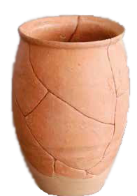

El jaciment de Darró no és només un punt en el mapa, sinó un autèntic llibre obert sobre més de 1.000 anys d’història a la vora de la Mediterrània. Situat en un lloc estratègic entre el promontori de Sant Gervasi i la desembocadura d’un antic torrent, aquest espai va ser durant segles un punt de trobada on van confluir diverses civilitzacions. Des dels primers pobladors ibers fins a la transformació en una vil·la romana i la seva posterior etapa visigòtica, Darró ha estat una cruïlla on el comerç marítim i l'intercanvi cultural amb fenicis, grecs i cartaginesos van forjar la identitat d’aquest territori molt abans de la fundació de la Vilanova actual.
